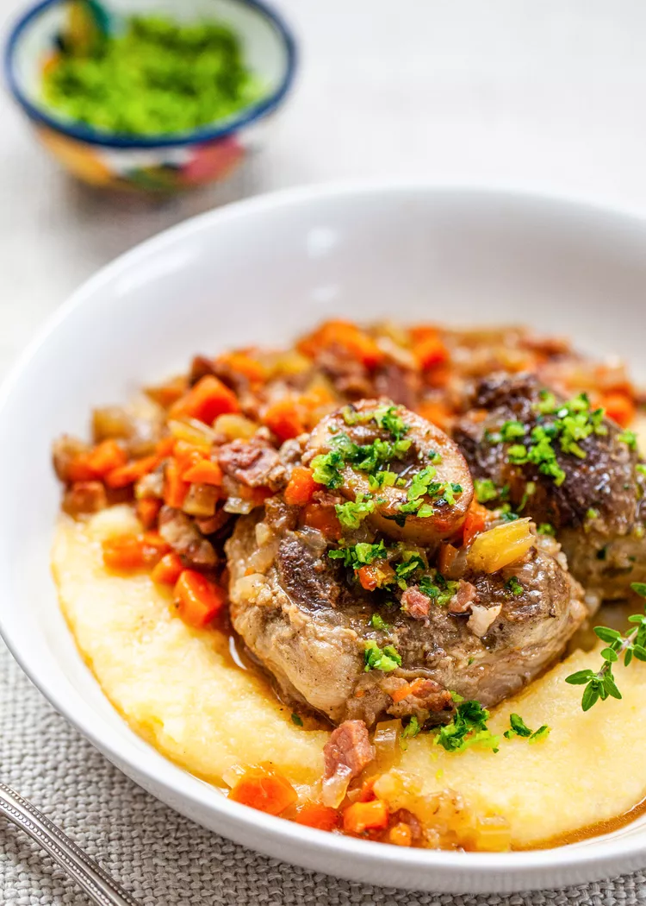

Osso Buco

Italy may make you think of pasta and pizza,
but the ever-succulent Osso Buco is a rather
underrated potential star of the show for your
dinners. Traditionally, this recipe uses veal,
but since it's hard to come by in
my country, this site will use beef.
Makes 4-6 servings.
Recipe from
Simply Recipes.
Ingredients
For the Osso Buco
- 4 oz pancetta, diced into 1/4 in cubes
- 2 1/2 to 3 pounds beef shanks (2 to 3 in thick)
- 1/2 cup diced carrot
- 1/2 cup diced celery
- 1 medium onion
- 2 tbsp chopped garlic
- 3 to 4 sprigs fresh thyme
- 1 cup dry white wine
- 1 to 2 cups chicken stock
- Flour for dusting the meat
- Salt and pepper
For the Gremolata
- 2 tbsp Italian parsley
- 1 tbsp finely-grated lemon zest
- 2 cloves garlic, crushed and minced
Instructions
- Preheat the oven to 160 deg C.
- Heat a dutch oven on
the stove top over medium heat for about
5 minutes. Add pancetta to pan, cook, stirring
occassionally.
When the pancetta is crispy and most of the
fat has rendered (about 5 minutes of cooking),
remove the pancetta to a plate covered with
some paper towel and set aside.
If necessary, drain off all but two tbsp of
the fat from the pan.
- Place the flour in a shallow bowl or
deep plate.
Season the veal shank well with salt and
pepper. Dredge the veal shanks with some
flour, shake off any excess, and add the
meat to the hot fat in the pan.
Increase the heat to medium high and cook
the shanks on each side until well-browned
(about 5 minutes per side). Remove the
shanks to a plate, set aside.
- Add the onions, carrots, and celery to
the Dutch oven. Cook the onion mixture,
stirring frequently, until the onions are
translucent and toss in the garlic and thyme.
Continue cooking until the vegetables just
begin to brown.
- Add the shanks and the pancetta back to the
pan. Pour in the wine and then add enough
stock to come a little more than halfway
up the sides of the shanks.
Bring to a simmer. Cover the pan and put it
in the oven to cook until the meat is tender,
about 60 to 90 minutes.
- Combine the gremolata ingredients, place in
a separate small serving dish.
Serve the osso buco on top of risotto
or polenta. Sprinkle with gremolata.
Return to home.